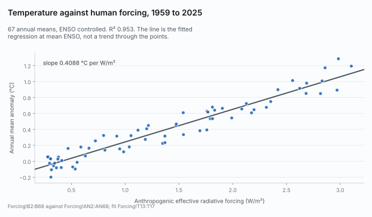
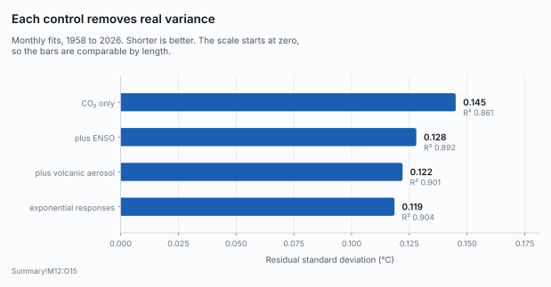
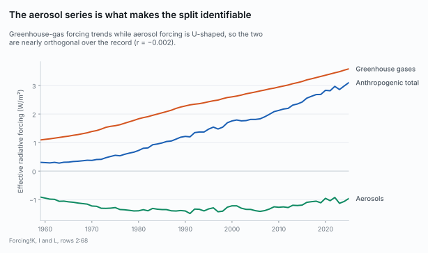
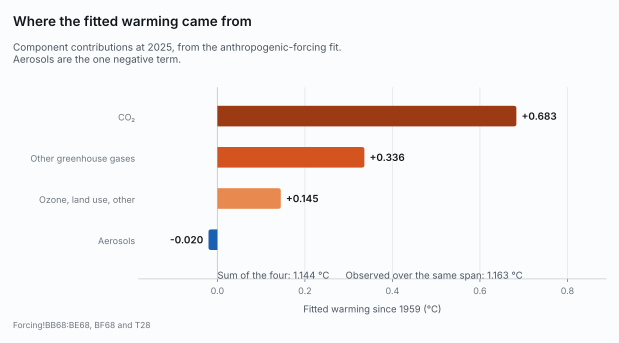
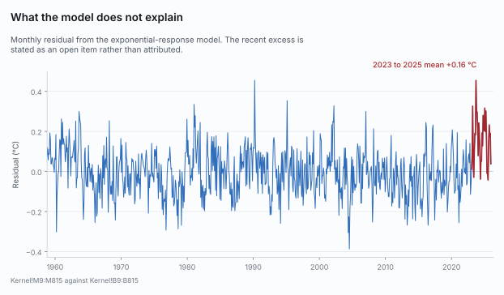

russnida-repo / Climate_Change_Workbook
A spreadsheet analysis of 822 months of surface temperature against atmospheric CO2, solar irradiance, ENSO and volcanic aerosol, built so that every figure in it can be re-derived from the published data by someone who does not trust it.
Annual mean anomaly regressed on anthropogenic effective radiative forcing with ENSO controlled, 1959 to 2025, then scaled by the forcing from doubled CO2.
| Quantity | Value | Units | Cell |
|---|---|---|---|
| Response to anthropogenic forcing, b | 0.4088 | °C per W/m² | Forcing!T14 |
| Scaled by F2× = 3.93 W/m² | 1.607 | °C per doubling | Forcing!T17 |
| R² of the fit | 0.9532 | 67 years | Forcing!T16 |
| Lag-1 autocorrelation of residuals | 0.357 | annual | Forcing!T18 |
| Standard error of b, naive | 0.0115 | °C per W/m² | Forcing!T19 |
| Standard error of b, AR(1) adjusted | 0.0167 | °C per W/m² | Forcing!U19 |
| What is included | Low | High | Level | Cell |
|---|---|---|---|---|
| Regression uncertainty only, AR(1) | 1.48 | 1.74 | 95% | Summary!B8 |
| Plus F2× uncertainty | 1.34 | 1.87 | 95% | Forcing!T43:U43 |
| Plus forcing uncertainty, Monte Carlo | 1.43 | 1.78 | 90% | Sensitivity!AC46 |
| The same draw, wider level | 1.39 | 1.81 | 95% | Sensitivity!AD46 |
| Source | Standard error | Cell |
|---|---|---|
| Time series, regression noise | 0.066 | Sensitivity!AA47 |
| F2×, the doubling forcing itself | 0.117 | Sensitivity!AA47 |
| Non-CO2 forcing components | 0.068 | Sensitivity!AA47 |
| Total, in quadrature | 0.15 | Sensitivity!AC47 |
| ENSO index choice, ONI against RONI | +0.058 | Open Items |
| The last row is structural rather than statistical: it is the whole shift in the headline from swapping one defensible ENSO control for another, and it sits outside every interval above. | ||

This is not TCR. It is a historical regression on a single 66-year realisation, scaled by F2×. The transient climate response is defined by a 1%-per-year model experiment, which this is not. The number falls inside the IPCC AR6 range, and that is a comparison, not a validation.
Monthly fits, each adding one natural-variability term. Read every row against the same-months column rather than the row above, because the sample changes as series with different coverage are added.

| Model | Months | CO₂, °C/doubling | R² | Previous, same months | Residual σ | Lag-1 | Lag recovered |
|---|---|---|---|---|---|---|---|
| CO₂ only | 822 | 2.734 | 0.861 | — | 0.145 | 0.644 | — |
| Plus ENSO, ONI at lag 3 | 815 | 2.747 | 0.892 | 0.861 | 0.128 | 0.547 | 3 months |
| Plus volcanic aerosol, lag 7 | 814 | 2.727 | 0.901 | 0.891 | 0.122 | 0.503 | 6 to 8 months |
| Plus solar irradiance, to 2023 | 783 | 2.644 | 0.893 | 0.890 | — | — | about 11 years |
| Exponential responses, not single lags | 807 | 2.704 | 0.904 | 0.898 | 0.119 | 0.473 | τ: ENSO 6, aerosol 12 |
| The CO₂ column is not on matched months. The solar row's 2.644 is a window effect: CO₂ alone on those same 783 months is already 2.640 (Volcanic!N31). | |||||||
| Model | In-sample R² | Out-of-fold R² | Bias, °C | Cell |
|---|---|---|---|---|
| CO₂ only | 0.861 | 0.838 | — | Kernel!P69 |
| CO₂ plus ENSO plus aerosol, exponential | 0.904 | 0.887 | 0.003 | Kernel!P66:Q66 |
| The same, τ fixed at 6 and 12 | 0.904 | 0.889 | 0.003 | Kernel!P68:Q68 |
| Pooled out-of-fold R² is dominated by the cross-decade trend, which a monotone CO₂-only regressor extrapolates across blocks. Within every fold the CO₂-only fit is near zero or negative R² while the three-factor model cuts the RMSE, which is the stronger statement. Kernel!P69 differs from the reproduction script by 0.006 with no recoverable provenance, and is left on the record rather than reconciled. | ||||
Fifteen datasets. The licence on this repository covers the workbook, the prose and the scripts; it does not and cannot cover the inputs, most of which are United States Government work in the public domain.
| # | Dataset | Provider | Retrieved | Terms |
|---|---|---|---|---|
| 1 | Surface temperature, GISTEMP v4 | NASA GISS | 2026-09-21 | US Government work, public domain; citation requested |
| 2 | Atmospheric CO₂, Mauna Loa | NOAA GML | 2026-09-21 | Free; citation requested |
| 3 | Solar irradiance, NRLTSI2 | LASP LISIRD | 2026-09-19 | NOAA CDR use agreement; no restrictions on use |
| 4 | Solar irradiance, Solar CDR v3 | NOAA NCEI | 2026-09-21 | NOAA CDR use agreement; no restrictions on use |
| 5 | ENSO, ONI on ERSSTv5 | NOAA CPC | 2026-09-19 | US Government work, public domain |
| 6 | ENSO, ONI on ERSSTv6 | NOAA CPC | 2026-09-21 | US Government work, public domain |
| 7 | Stratospheric aerosol and volcanic forcing | ClimateIndicator | 2026-09-19 | MIT Licence, © 2023 Chris Smith; notices must travel with any copy |
| 8 | Stratospheric aerosol, GloSSAC v2.24 | NASA GISS | 2026-09-21 | NASA data, public domain; cite GloSSAC |
| 9 | Effective radiative forcing, 61 components | ClimateIndicator | 2026-09-19 | As item 7 |
| 10 | Forcing uncertainty, 5th and 95th percentiles | ClimateIndicator | 2026-09-21 | As item 7 |
| 11 | Surface temperature, HadCRUT5 | Met Office Hadley Centre | 2026-09-21 | Open Government Licence v3 |
| 12 | Surface temperature, Berkeley Earth | Berkeley Earth | 2026-09-21 | CC BY 4.0 |
| 13 | Top-of-atmosphere fluxes, CERES EBAF | NASA LaRC ASDC | 2026-09-22 | NASA data, openly available; citation requested |
| 14 | Ocean heat content, 0 to 2000 m | NOAA NCEI | 2026-09-22 | US Government work, public domain; citation requested |
| 15 | ENSO, RONI on ERSSTv5 | NOAA CPC | 2026-10-22 | US Government work, public domain |
Three attributions survive reuse. The ClimateIndicator repository is MIT, which requires the copyright and permission notices to accompany any copy, a stricter form than a citation line. HadCRUT5 carries the Open Government Licence and Berkeley Earth is CC BY 4.0. Reusing this repository does not discharge any of them.
Greenhouse-gas forcing trends upward across the whole record. Aerosol forcing does not: it deepens into the 1980s and then recovers. That difference in shape is what lets the regression tell the two apart.


The workbook does not close the gap between the model and the last three years, and it does not pretend to. The leading candidate was tested and rejected.

The obvious explanation does not work. The CERES reflected-shortwave decline over 2023 to 2025 would imply +0.53 °C at the fitted response, roughly eight times the residual it is meant to explain and 1.5 times the entire change in total forcing across the same windows. A top-of-atmosphere flux change mixes forced change, feedback to warming and internal variability, and the regression's own coefficient already contains whatever part of it is feedback. It is left unexplained.
Four scripts rebuild the workbook's pasted figures from the same public inputs. Two of them compare themselves against the workbook cell by cell, so they can disagree with it and say so.
# everything below runs against the published files
git clone https://github.com/russnida-repo/Climate_Change_Workbook.git
cd Climate_Change_Workbook
sha256sum -c MANIFEST.sha256
python3 residual_diagnostics.py
python3 validate_kernels.py
python3 erf_uncertainty.py Climate_Change_Analysis_2.xlsx erf_inputs 20000
python3 open_items.py Climate_Change_Analysis_2.xlsx roni_v5_cpc.csv
Needs Python 3.13 with numpy, scipy and openpyxl. A clean run of validate_kernels.py reports exactly one DIFFERS, at Kernel!P69, which the script is written to report rather than reconcile. Any other one is a finding. The other two scripts do not self-check: they print their results beside the workbook's and leave the comparison to you.